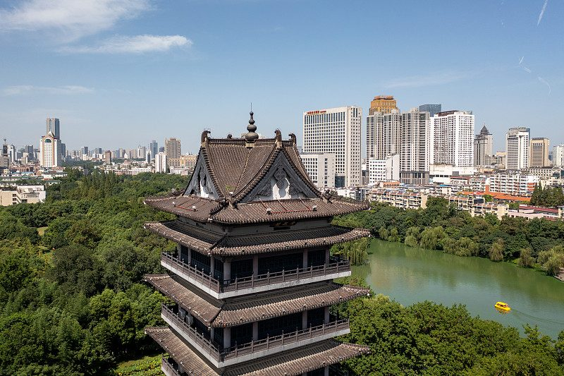
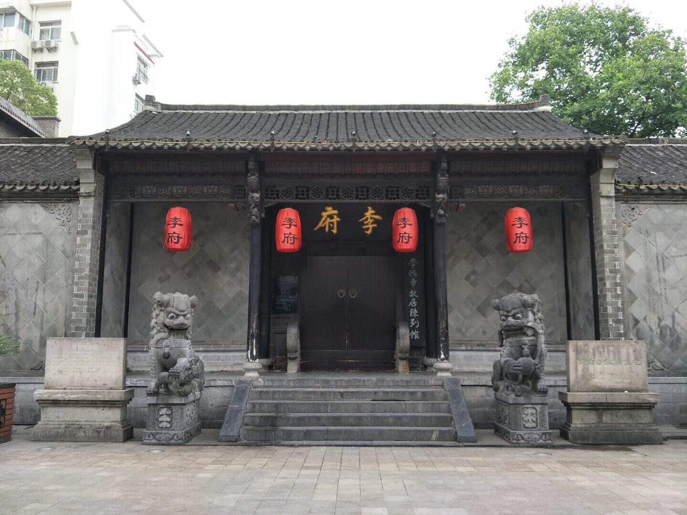
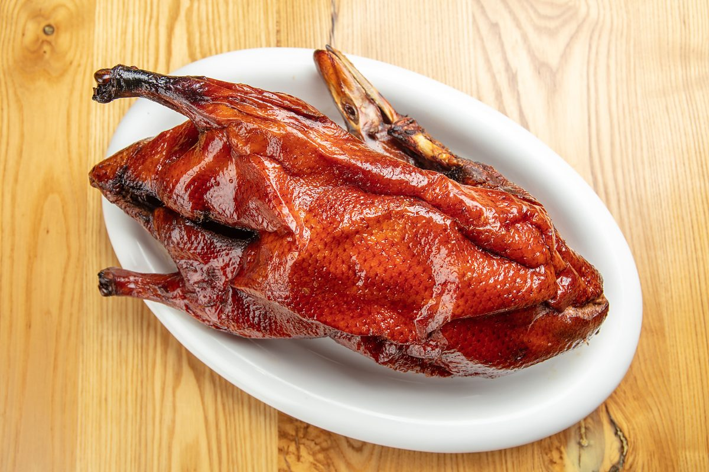
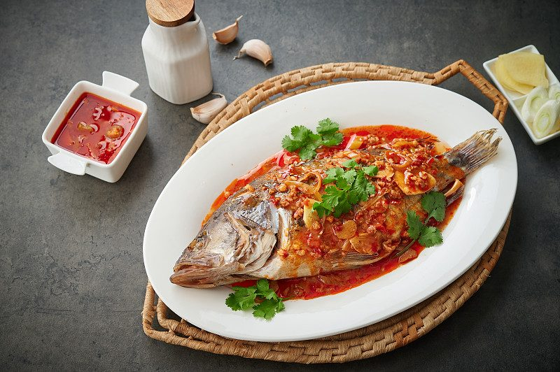
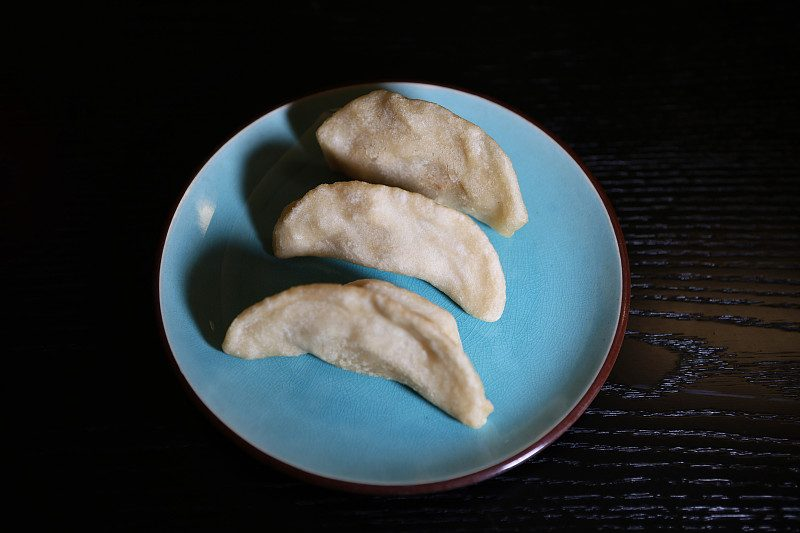

团队成员
以下是我们的团队个人介绍，点击姓名进入各自的个人主页。


地理位置
合肥在哪里？
合肥，安徽省省会，地处江淮之间、环抱巢湖，因东淝河与南淝河在此汇流而得名，古称庐州、庐阳。合肥位于安徽省中部，是长三角地区重要的中心城市、综合性国家科学中心，也是"一带一路"与长江经济带战略的双节点城市、G60科创走廊中心城市。
全市总面积约 1.14 万平方公里，占安徽省总面积约 8.2%，下辖瑶海、庐阳、蜀山、包河 4 个区，肥东、肥西、长丰、庐江、巢湖 5 个县（市）以及多个国家级开发区。
人口与城市
合肥正加速迈向千万人口、万亿 GDP 的特大城市。
合肥是"养人的地方、创新的天地"：中国科学技术大学坐落于此，拥有"人造太阳"EAST、量子计算原型机"九章"等大科学装置与成果，科大讯飞、京东方、蔚来等企业在此扎根。
风景名胜
2500 年古庐州，从三国古战场到徽派水乡，点击图片可了解更多。
三河古镇 · 5A 景区
因丰乐河、杭埠河、小南河三水交汇得名，2500 多年历史的水乡古镇，白墙黛瓦、青石巷陌。

查看详情包公园 · 清风阁
为纪念北宋清官包拯而建的环湖园林，清风阁可俯瞰包河，是合肥的城市文化地标。
逍遥津公园
三国古战场，"张辽威震逍遥津"的故事就发生于此，如今是老合肥人最爱的城市公园。
巢湖 · 五大淡水湖之一
八百里巢湖环抱合肥，湖天一色、水鸟翔集，环湖大道串联起绝美滨湖风光。

查看详情李鸿章故居（李府）
位于淮河路步行街中段，晚清江淮民居代表，合肥现存规模最大、保存最完整的名人故居。
天鹅湖 · 政务区天际线
合肥现代都市新名片，大剧院、安徽广电与摩天楼群环湖而立，夜景璀璨。
城市文化
庐剧唱腔、包公铁面、三国遗韵，与科创基因交织成独特的"合肥气质"。
- 庐剧 —— 安徽地方戏曲大戏，国家级非物质文化遗产，唱腔质朴、乡土气息浓郁。
- 包公文化 —— 包拯"铁面无私"的形象深入人心，包公园、包公祠是重要的文化载体。
- 三国文化 —— 逍遥津之战、张辽止啼等典故流传千年，合肥因此有"三国故地"之称。
- 徽文化与科技 —— 徽派建筑、徽商精神浸润城市肌理，同时"科创合肥"正成为新的文化名片。
- 非遗美食 —— 庐州烤鸭、三河米饺、四大名点等市级/省级非遗项目传承百年风味。
合肥美食
徽菜咸鲜、小吃烟火，来合肥必吃的这几样，点击图片了解更多。

查看详情庐州烤鸭
合肥美食名片，皮脆肉嫩、肥而不腻，搭配甜卤与鸭油烧饼，是"千年庐州城，烤鸭最出名"。

查看详情臭鳜鱼
徽菜"头牌"，闻着臭吃着香，肉质紧实呈蒜瓣状，是安徽人餐桌上的灵魂硬菜。

查看详情三河米饺
三河古镇非遗小吃，籼米皮包土猪肉馅，油炸后外酥里糯，相传曾是太平军的军粮。
- 合肥四大名点：麻饼、烘糕、寸金、白切，200 多年历史的传统糕点。
- 下塘烧饼：现场抛饼、炭火烤制，酥脆咸香，源自长丰下塘。
- 吴山贡鹅：二十余种香料慢卤，卤香浓郁、肉质紧实，千年宫廷卤味。
- 肥西老母鸡汤：汤色金黄、滋补养生，合肥人待客的"硬核"招牌。
- 罍街夜市：罍+村的市井烟火，小龙虾配啤酒，是合肥夏夜的打开方式。
获取更多信息
以下官方与权威渠道可获取更详细的合肥城市资讯。